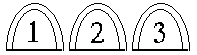
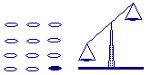
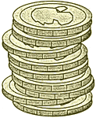

Click Here to Visit our Sponsor
Brain-Teasers
|

|
The puzzles are marked with stars ( ) that show the degree of difficulty of the given puzzle.
) that show the degree of difficulty of the given puzzle.
![[BACK]](left.gif) back to the main puzzle page.
back to the main puzzle page.

i.
The Bridge 
Four men want to cross a bridge. They all begin on
the same side. It is night, and they have only one flashlight with them.
At most two men can cross the bridge at a time, and any party who crosses,
either one or two people, must have the flashlight with them.
The flashlight must be walked back and forth: it cannot be thrown, etc.
Each man walks at a different speed. A pair must walk together at the speed
of the slower man. Man 1 needs 1 minute to cross the bridge, man 2 needs 2
minutes, man 3 needs 5 minutes, and man 4 needs 10 minutes. For example, if
man 1 and man 3 walk across together, they need 5 minutes.
The Question:
How can all four men cross the bridge in 17 minutes?
The Answer:
 Click here!...
Click here!...
![[UP]](back.gif) back to index
back to index
ii.
Alphabet Blocks
Molly has a set of four alphabet blocks.
Each side of these blocks is printed with a different letter,
making 24 in total.
Molly notices that by rearranging the blocks,
she can spell each of the following words:
BOXY, BUCK, CHAW, DIGS, EXAM, FLIT,
GIRL, JUMP, OGRE, OKAY, PAWN, ZEST
The Question:
Which letters are on each block?
The Answer:
Click here!...
back to index
iii.
To Know or not To Know
Two whole numbers, m and n, have been chosen.
Both are unequal to 1 and the sum of them is less than 100.
The product, m × n, is given to mathematician X.
The sum, m + n, is given
to mathematician Y. Then both mathematicians have the following conversation:
X: "I have no idea what your sum is, Y."
Y: "That's no news to me, X. I already knew you didn't know that."
X: "Ahah! Now I know what your sum must be, Y!"
Y: "And now I also know what your product is, X!"
The Question:
What are the numbers m and n?
The Answer:
Click here!...
back to index

iv.
A Quiz...
You are a participant in a quiz. The quizmaster shows
you three closed doors. He tells you that behind one of these doors
there is a prize, and behind the other two doors there's nothing. You
select one of the doors, but before you open it the quizmaster deliberately
picks out a remaining empty door and shows that there is nothing behind it.
The quizmaster offers you a chance to switch doors with the remaining
closed door.
The Question:
Should you stick to your
choice?
The Answer:
Click here!...
back to index
v.
John & Julia
Julia is as old as John will be when Julia
is twice as old as John was when Julia's age was half the sum
of their present ages.
John is as old as Julia was when John was
half the age he will be 10 years from now.
The Question:
How old are John and Julia?
The Answer:
Click here!...
back to index
vi.
Square Puzzle
The five pieces shown below must be put together
to a square.

The Question:
How should this be done?
A Hint:
Print the picture with the pieces, and cut the pieces out. It's more difficult than it looks!...
The Answer:
Click here!...
back to index

vii.
Coin Weighing
We have 12 coins and a balance. 11 coins are of the
same weight, but one coin differs in weight
(note that you do not know whether the coin with
different weight is heavier or lighter!).
You may perform three weighings to find out which coin has a different weight,
and whether this coin is heavier or lighter.
The Question:
How should you perform these three weighings to find out which coin has a different weight,
and whether this coin is heavier or lighter?
The Answer:
Click here!...
back to index

viii.
Stacking Coins
You have an unlimited number of coins with a diameter d
and you stack them. The goal is to let the topmost coin
stick out as far as possible.
The Question:
What is the maximal distance between the center of the topmost coin and the center of the lowermost coin?
The Answer:
Click here!...
back to index
ix.
3 Heads & 5 Hats
In a small village in the middle of nowhere, three
innocent prisoners are sitting in a jail. One day, the cruel jailer
takes them out and places them in a line on three chairs, in such a way
that man C can see both man A and man B, man B
can see only man A, and man A can see none of the other men.
The jailer shows them 5 hats, 2 of which are black and 3 of which are white.
After this, he blindfolds the men, places one hat on each of their heads,
and removes the blindfolds again. The jailer tells his three prisoners that
if one of them is able to determine the color of his hat within one minute,
all of them are released. Otherwise, they will all be executed. None of the
prisoners can see his own hat, and all are intelligent. After 59 seconds,
man A shouts out the (correct) color of his hat!
The Question:
What is the color of man A's hat, and how does he know?
The Answer:
Click here!...
back to index

x.
Zebra
There are 5 houses. Each house has a unique color, and each owner has a different nationality. Each owner keeps
a different pet, drinks a different type of beverage, and smokes a different brand of cigarettes. The Brit lives
in the red house, the Sweed keeps a dog, and the Dane drinks tea. The green house is on the immediate left of
the white house. In the green house they drink coffee. The man who smokes Pall Mall has birds. In the yellow
house they smoke Dunhill. In the middle house they drink milk. The Norwegian lives in the first house. The
man who smokes Blend lives in the house next to the house with the cats. In the house next to the house with the
horse, they smoke Dunhill. The man who smokes Blue Master, drinks beer. The German smokes Prince. The Norwegian
lives next to the blue house. They drink water in the house that lies next to the house where they smoke Blend.
The Question:
Who owns the zebra?
The Answer:
Click here!...
back to index
xi.
Colourful Dwarfs
In a distant, dark forest, lives a population of 400
highly intelligent dwarfs. The dwarfs all look exactly alike, but only
differ in the fact that they are wearing either a red or a blue hat.
There are 250 dwarfs with a red hat and 150 dwarfs with a blue hat.
Striking however, is that the dwarfs don't know these numbers themselves
and that none of them knows what the colour of his hat is (there are
for example no mirrors in this forest). But the dwarfs do know that
there is at least one dwarf with a red hat.
During a certain period of their year, there is
a big party in this village, to which initially all dwarfs will go.
However, this party is only intended for dwarfs wearing a blue hat. Dwarfs
with a red hat are supposed never to return to the party again, as soon as
they know that they are wearing a red hat.
The Question:
How many days does it take before there are no more dwarfs with a red hat
left at the party?
The Answer:
Click here!...
back to index

xii.
Pirate Treasure
A pirate ship captures a treasure of 1000 golden coins.
The treasure has to be split among the 5 pirates: 1, 2, 3, 4, and 5
in order of rank. The pirates have the following important characteristics:
- Infinitely smart.
- Bloodthirsty.
- Greedy.
Starting with pirate 5 they can make a proposal how to split up the treasure.
This proposal can either be accepted or the pirate is thrown overboard.
A proposal is accepted if and only if a majority of the pirates agrees on it.
The Question:
What proposal should pirate 5
make?
The Answer:
Click here!...
back to index
xiii.
Bizarre Boxes
Someone shows you two boxes and he tells you that one
of these boxes contains two times as much as the other one, but he does
not tell you which one this is. He lets you choose one of these boxes,
and opens it. It turns out to be filled with $10. Now he gives you the opportunity
to choose the other box instead of the current one (and skip the $10 of the
first box), because the second box could contain twice as much (i.e. $20).
The Question:
Should you choose the second box, or should you stick to your first choice to maximize the expected amount of money?
A Hint:
If you have $10, and you could double this
with a chance of 1/2, or half it with a chance of 1/2, one would expect
an average of 1/2 * $20 + 1/2 * $5 = $12.5 (so you would expect to gain $2.5)!...
The Answer:
Click here!...
back to index
xiv.
The Truel
On an early morning, three rivals get together on an open
spot in a dark wood to compose a quarrel by means of guns.
A kind of duel, but with three persons: A, B and C.
The rules of the game are:
- They draw lots who may fire first, second and third.
- Next, they will continue firing at each other in this order
until only a single person is alive.
- Every person decides himself at which person he fires.
- Everyone knows that A hits (kills) in 100% of all shots, B hits (kills)
in 80% of all shots and C hits (kills) in 50% of all shots.
- Each person chooses his ideal strategy.
- No one is killed by a stray bullet.
The Question:
Who has the largest chance of surviving the truel,
and how big is this chance?
The Answer:
Click here!...
back to index
xv.
Fourteen Fifteen
Below you see a square with fifteen numbered, movable tiles and an empty space
in the lower right corner.
The tiles are placed in the correct order, except for the tiles numbered
"14" and "15", which have been swapped.
The Question:
How must the tiles be moved, to get all tiles in the correct order,
with the empty space again in the lower right corner?
A Hint:
Clicking the mouse on a tile next to the empty space moves the tile into
the empty space.
By clicking the mouse on a tile in the same row or column as the
empty space, you can move several tiles in one move.
The Answer:
Click here!...
Another Question:
Starting from the begin position, how must the tiles be moved,
to get all tiles in the correct order, but with the empty space
in the upper left corner (see below)?
Another Answer:
Click here!...
back to index
xvi.
Coconut Chaos
Five sailors survive a shipwreck and swim to a tiny island where there is nothing but a coconut tree and a monkey.
The sailors gather all the coconuts and put them in a big pile under the tree.
Exhausted, they agree to go to wait until the next morning to divide up the coconuts.
At one o'clock in the morning, the first sailor wakes up.
He realizes that he can't trust the others, and decides to take his share now.
He divides the coconuts into five equal piles, but there is
one coconut left over.
He gives that coconut to the monkey, hides his coconuts
(one of the five piles), and puts the rest of the coconuts
(the other four piles) back under the tree.
At two o'clock, the second sailor wakes up.
Not realizing that the first sailor has already taken his share,
he too divides the coconuts up into five piles,
leaving one coconut over which he gives to
the monkey.
He then hides his share (one of the five piles),
and puts the remainder (the other four piles) back under the tree.
At three, four, and five o'clock in the morning,
the third, fourth, and fifth sailors each wake up and carry out the same actions.
In the morning, all the sailors wake up, and try to look innocent.
No one makes a remark about the diminished pile of coconuts,
and no one decides to be honest and admit that they've
already taken their share.
Instead, they divide the pile up into five piles, for the sixth time,
and find that there is yet again one coconut left over, which they give to the monkey.
The Question:
What is the smallest amount of coconuts that there could have been in the original pile?
The Answer:
Click here!...
back to index
xvii.
Numbers and Dots
This is a famous problem from 1882, to which a prize of $1000 was
awarded for the best solution. The task is to arrange the seven
numbers 4, 5, 6, 7, 8, 9, and 0, and eight dots in such a way that
an addition approximates the number 82 as close as possible.
Each of the numbers can be used only once. The dots can be used in
two ways: as decimal point and as symbol for a recurring decimal.
For example, the fraction 1/3 can be written as
The dot on top of the three denotes that this number is repeated
infinitely. If a group of numbers needs to be repeated, two dots are
used: one to denote the beginning of the recurring part and one to
denote the end of it. For example, the fraction
1/7 can be written as
Note that '0.5' is written as '.5'.
The Question:
How close can you get to the number 82?
The Answer:
Click here!...
back to index
Click Here to Visit our Sponsor
Copyright © 1996-2005. RJE-productions. All rights reserved.